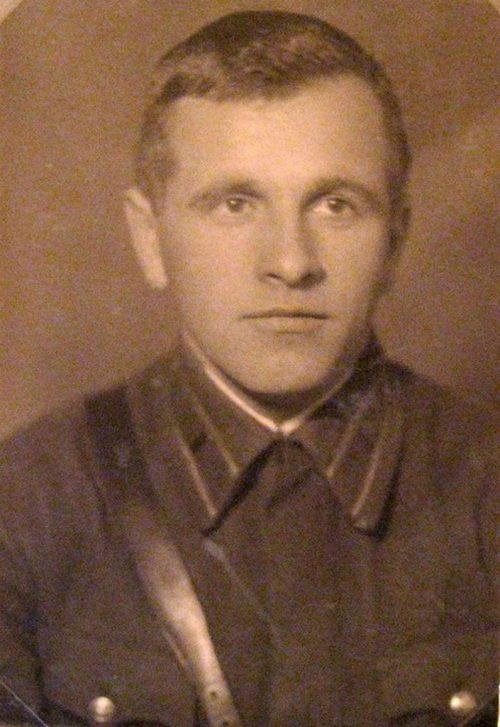

Известные люди Витебской области
Евфросиния основала монастыри, ставшие центром просвещения в Полоцком княжестве.Из-за неё пополнялась библиотека Софийского собора и велось полоцкое летописание. По заказу Евфросинии был создан уникальный шедевр – крест, названный ее именем.
Уроженец древнего Полоцка, выдающийся философ, просветитель, гуманист, писатель, учёный эпохи Возрождения Франциск Скорина вошёл в историю как "отец" восточноевропейского книгоиздания: впервые издал Библию на старобелорусском языке.
Дочь последнего племенного князя полочан Рогволода. Была насильно выдана замуж за Владимира Святославича. Однажды, Рогнеда Рогволодовна, желая отомстить за убийство отца и братьев, решила убить Владимира, но едва не погибла сама и была спасена лишь своим малолетним сыном Изяславом.
Белорусский государственный деятель, которого земляки помнят и чтят по сей день. Находясь во главе Белорусской ССР, он проявил себя как активный и весьма харизматичный руководитель.
Один из самых знаменитых представителей авангардного искусства в живописи, график, иллюстратор, сценограф, поэт, мастер прикладного и монументального искусства двадцатого века Марк Шагал, родился в городе Витебске 24 июня 1887 года. В семье мелкого торговца Захара (Хацкеля) он был старшим из десяти детей.
Белорусский прозаик, драматург, публицист. Родился в 1924 году в Витебской области.
В основе творческой манеры Быкова – суровая правда в изображении войны, ее драматических и трагических ситуаций, пристальное внимание к богатству мыслей и чувств человека, демократизм и обострённая человечность.
Композитор, педагог, общественный деятель, основатель современной белорусской композиторской школы, профессор, Заслуженный деятель искусств Беларуси, Народный артист Беларуси, член Международной Славянской Академии наук, образования, искусств и культуры, лауреат Государственной премии БССР.
Родился в 1899 году в деревне Зазыбы. Окончил Рогачевскую учительскую семинарию, работал в Липиничской начальной школе Буда-Кошелевского района. Участник советско-польской войны 1920 года. Награжден тремя орденами Ленина, тремя орденами Трудового Красного Знамени, орденом Красной Звезды, медалями.
Родилась 22 июня 1900 года в Витебске. В детстве она обучалась игре на флейте. После Октябрьской революции ее семья, белорусские евреи, обосновалась в Данциге. Позже они перебрались в Париж, где Дженни продолжила заниматься по классу фортепиано, намереваясь начать карьеру концертной исполнительницы.

Родился 7 февраля 1903 года в селе Хотино Витебской губернии в крестьянской семье. Окончил церковно-приходскую школу и школу второй ступени в недалеко расположенном посёлке Улла.
Указом Президиума Верховного Совет СССР от 21 декабря 1941 года за мужество и героизм присвоено звание Героя Советского Союза.
Родился в Витебской области.На протяжении всей жизни он занимал высокие посты в ВКЛ, служил канцлером княжества с 1589 года и великим гетманом — с 1625-го.
В 1581 году он принимал участие в создании Трибунала ВКЛ, а к 3-му Статуту написал предисловие в виде обращения к народу.
23 декабря 1891 года в деревне Пунище родился Минай Филиппович Шмырев (партизанский псевдоним Батька Минай), один из организаторов и руководителей партизанского движения в Витебской области, Герой Советского Союза, член ВКП (б)/КПСС с 1920 года.
Вернуться назад